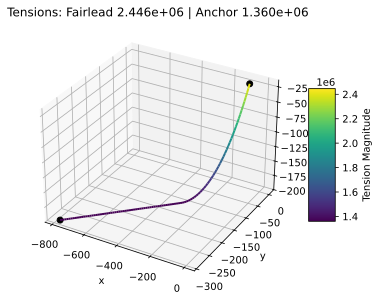
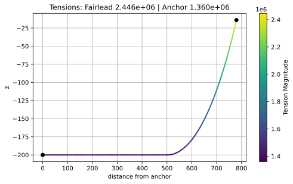
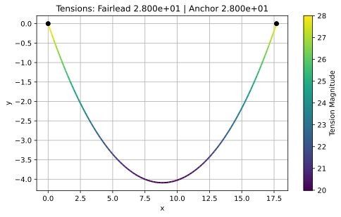
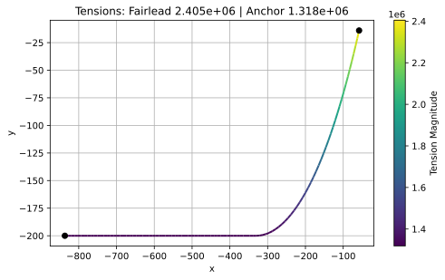
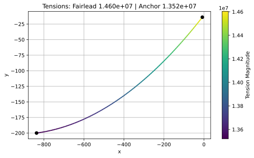
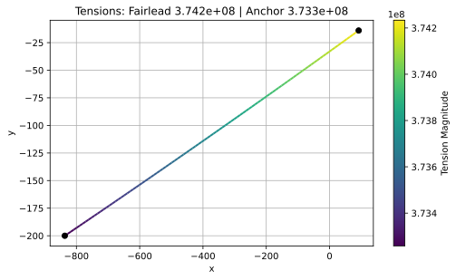
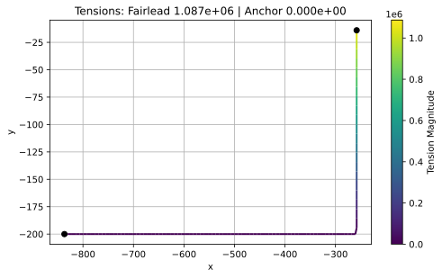
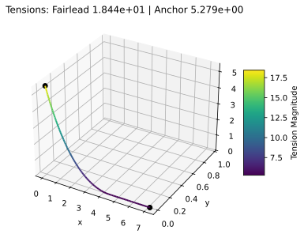

pyCatenary


A Python library for solving catenary equations.
Installation
PyPI version
For installing the latest official release on the Python Package Index (PyPI):
pip install pycatenary
Development version
Installing
For installing a development version through pip:
git clone https://github.com/tridelat/pycatenary
cd pycatenary
pip install -e .
Running tests
From the root directory of pycatenary, simply run:
pytest
About pyCatenary
Features
Catenary solutions for elastic or fully inextensible/rigid cables.
Contact with flat floor/seabed for partly lifted lines.
Multisegmented cables with different properties.
Catenary lines can be defined in both 2D or 3D coordinate systems.
Tension and position can be retrieved at fairlead/anchor and at arbitrary position along line.
Assumptions
All lines, included multisegmented ones, have a single pure catenary shape.
Gravitational acceleration is along -Z in 3D, -Y in 2D.
If floor/seabed is enabled, it is assumed flat.
For multisegmented lines, elongation is calculated per section, starting from the lowest segment in the catenary. Once the solution for the elongated catenary has converged, tension along the line is retrieved directly from the catenary equation using submerged weight averaged over the lifted line length.
Getting Started
Creating a mooring line
from pycatenary import MooringLine
# define properties of cable
line1 = MooringLine(
fairlead=[-54.50, -19.84, -14.0], # fairlead position [m]
anchor=[-787.09, -286.48, -200], # anchor position [m]
L=850.0, # unstretched line length [m]
w=5844.1, # submerged weight [N/m]
EA=3.27e9, # axial stiffness [N]
floor=True, # if True, floor at anchor level
)
# compute solution for the catenary
line1.compute_solution()
Plotting
With matplotlib installed, the cable can be plotted in 3D:
line1.plot()
Or in 2D:
line1.plot_2d()


Retrieving tension/position along line
The force experienced by the anchor or fairlead at the mooring line can be retrieved as follows:
# get force at the fairlead
line1.get_fairlead_force()
# get force at the anchor
line1.get_anchor_force()
Tension (strictly positive) and position can also be retrieved along the line as follows:
# get tension at 800m along the line from the anchor
line1.get_tension(800.0)
# get position at 800m along the line from the anchor
line1.get_position(800.0)
# get tension at 5m along the line from fairlead
line1.get_tension(5.0, from_fairlead=True)
# get position at 5m along the line from fairlead
line1.get_position(5.0, from_fairlead=True)
Updating fairlead/anchor position
Fairlead and anchor positions can be updated as follows:
# change fairlead position
line1.set_fairlead_position([-50.0, -19.84, -14.0])
# do not forget to recompute solution after updating positions
line1.compute_solution()
This can be used for quasi-static analysis, retrieving forces at fairlead/anchor, applying it to an external body dynamics solver, doing a dynamics step, and updating fairlead/anchor positions of the pyCatenary line to retrieve the new forces.
Other functionalities
For extra functionality, please refer to the documentation: https://tridelat.github.io/pycatenary
Examples
Cable hanging on own weight
This 2D example consists of an inextensible cable hanging on its own weight between 2 points placed at the same height, with no floor:
from pycatenary import MooringLine
# define properties of cable
line2 = MooringLine(
fairlead=[17.69, 0.0],
anchor=[0.0, 0.0],
L=20.0,
w=1.962,
EA=None,
floor=False,
)
# compute solution for the catenary
line2.compute_solution()
# plot solution
line2.plot()

Partly / fully lifted cable
The following 2D example showcases the different configurations possible for a mooring line.
For a partly lifted line:
from pycatenary import MooringLine
import numpy as np
# make mooring line in partly lifted line configuration
line3 = MooringLine(
fairlead=[-58.0, -14.0],
anchor=[-836.7, -200.0],
L=850.0,
w=5844.1,
EA=3.27e9,
floor=True,
)
line3.compute_solution()
line3.plot()
# move fairlead for fully lifted line position
new_position = line3.get_fairlead_position() + np.array([50.0, 0.0])
line3.set_fairlead_position(new_position)
line3.compute_solution()
line3.plot()
# move fairlead for taut line position
new_position = line3.get_fairlead_position() + np.array([100.0, 0.0])
line3.set_fairlead_position(new_position)
line3.compute_solution()
line3.plot()
# move fairlead in hanging line position
new_position = line3.get_fairlead_position() + np.array([-350.0, 0.0])
line3.set_fairlead_position(new_position)
line3.compute_solution()
line3.plot()




Multisegmented cable
The following 3D example consists of a mooring line with 4 segments of different properties with the floor placed at the anchor height. Segments must be defined from the anchor to the fairlead.
from pycatenary import MooringLine
import numpy as np
line4 = MooringLine(
fairlead=[0.142, 0.0, 5.486],
anchor=[7.083, 0.0, 0.0],
L=[5.672, 0.126, 4.0, 0.259],
w=np.array([0.402, 1.558, 0.00425, 1.529]) * 9.81,
EA=[2.050e3, 3.636e6, 10.873e3, 6.464e6],
floor=True
)
line4.compute_solution()
line4.plot()

Note that to make the cable inextensible, the axial stiffness only needs to be defined to None as follows:
from pycatenary import MooringLine
import numpy as np
line4 = MooringLine(
fairlead=[0.142, 0.0, 5.486],
anchor=[7.083, 0.0, 0.0],
L=[5.672, 0.126, 4.0, 0.259],
w=np.array([0.402, 1.558, 0.00425, 1.529]) * 9.81,
EA=None,
floor=True
)
line4.compute_solution()
Documentation
To generate the documentation, run the following from the root directory:
cd docs
sphinx-build -M html build
Once generated, open the index page from build/html/index.html.